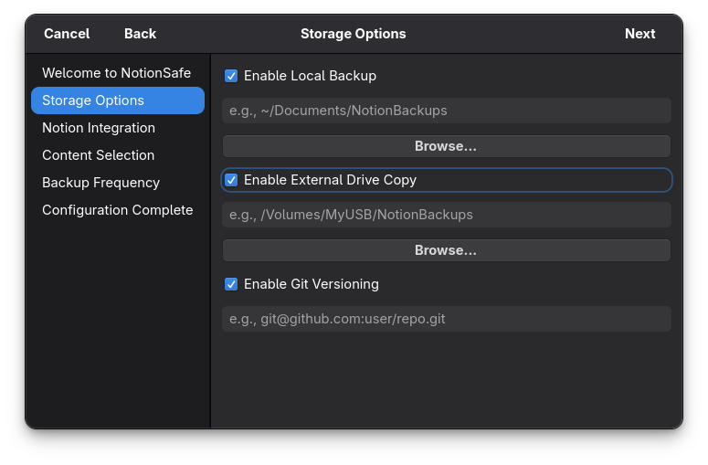

Configuration
Fine-tune NotionSafe to fit your workflow. All settings can be changed after the initial wizard setup.
Notion API Token
NotionSafe uses a Personal Integration Token. This token grants the app read-only access to the pages you choose to share with it.
- If you change your Notion token, click the "Re-run Wizard" button on the settings tab to update it.
- Security Note: Your token is never stored in plain-text. It is stored in the Windows Credential Manager or the Linux Keyring (libsecret/GNOME Keyring/KWallet).
Backup Storage Path
You can change your backup path at any time. When you update the path, NotionSafe will automatically move your existing backups to the new location, or start fresh if the new path is an external drive.

Git Integration (Optional)
For power users, NotionSafe supports GitOps. This allows you to treat your Notion workspace like a code repository.
- Click the Settings tab.
- Toggle "Enable Git Backup."
- Enter your remote repository URL (e.g.,
https://github.com/username/notion-backups.git). - Enter your Personal Access Token (PAT).
NotionSafe will now automatically commit your snapshots and push them to the remote repo. This provides a detailed history and a second, off-site backup.
Backup Frequency
Choose between Hourly, 6-Hour, 12-Hour, or Daily backups. The frequency can be adjusted in the Settings tab and will immediately update the underlying OS-native scheduled task.

Advanced Settings
Looking for more granular control? You can edit the config.yaml file directly, located in your user profile directory (~/.notionsafe/ on Linux or %APPDATA%/NotionSafe/ on Windows).